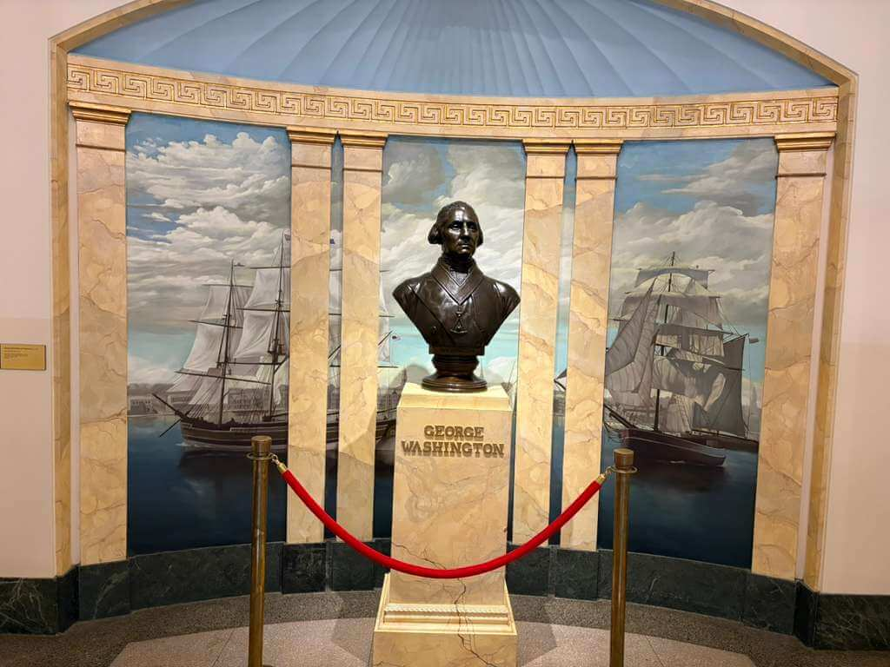

George Washington Masonic National Memorial
Alexandria · Virginia · United States
The George Washington Masonic National Memorial is a historic landmark in Alexandria, Virginia, dedicated to the memory of George Washington, the first President of the United States. Built by the Freemasons in his honor, the impressive structure stands on Shooter's Hill and is one of the city's most recognizable landmarks. Inspired by ancient architecture, the memorial features a monumental tower, historical exhibits, and spaces that reflect Washington's legacy and his connection to Freemasonry. Its distinctive design draws inspiration from the ancient Lighthouse of Alexandria, giving the building a particularly striking appearance. From its elevated position, visitors can also enjoy views of Alexandria and the surrounding area. Visiting this site offers an opportunity to explore an important part of American history, learn more about Washington's legacy, and admire the architecture of this remarkable memorial. This collection brings together my personal photographs and impressions of one of Virginia's most distinctive historic landmarks.
My Photo Gallery
Explore my personal travel photographs and memories from the George Washington Masonic National Memorial.
View All Photos ↗